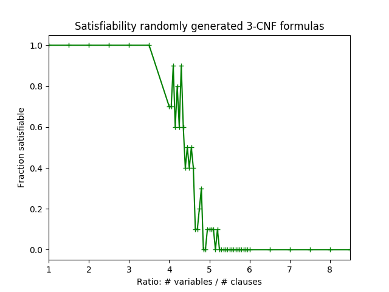
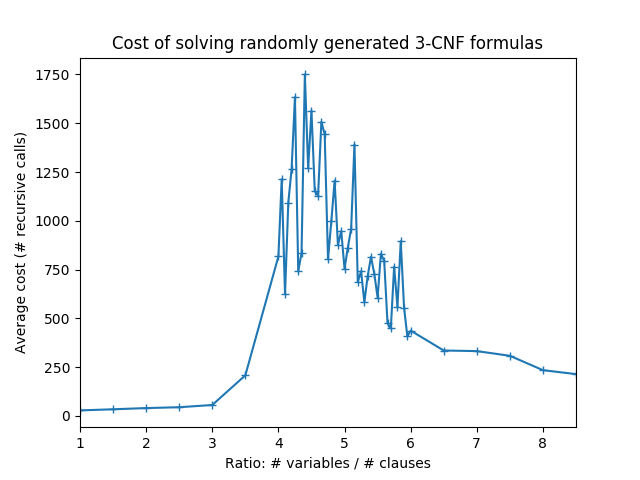

See the instructions in Lab 1 for setting up the work environment, compiling code, running code, saving your work, and turning in your work. A few quick clarifications.
Compiling your code To run your code, you can use the command line.
Change to the directory where the files are located. For me, they can be found in my lab2 folder, inside my cosc290 which is on my Desktop:
$ cd /Users/mhay/Desktop/cosc290/lab2/
(you will obviously want to specify a different path as mhay is my username).
Once you have navigated to the directory that contains your code, you can compile your code by typing:
$ javac edu/colgate/cosc290/satsolver/*java
Running your code If you are using the command line, you can execute your code by typing java followed by the fully-qualified name of the class that contains a main method. For lab 2, you can type:
$ java edu.colgate.cosc290.satsolver.SatSolver
And you should see something like this:
Exception in thread "main" java.lang.UnsupportedOperationException: implement me!
at edu.colgate.cosc290.satsolver.CNFF.getVariables(CNFF.java:36)
at edu.colgate.cosc290.satsolver.SatSolver.isSatisfiable(SatSolver.java:44)
at edu.colgate.cosc290.satsolver.SatSolver.main(SatSolver.java:66)
In this lab, you are asked to implement an algorithm that takes as input a proposition that is written in Conjunctive Normal Form (CNF) and returns true if the formula has a satisfying assignment and false if the formula is unsatisfiable.
This is a very important problem, as discussed in the reading (see Ch. 3.3.3 and the “CS Connection” on p. 326). In fact, you might say this is the most important problem in all of computer science. Many real-world problems can cast as CNF satisfiability problems. For example, it is used to check Paris Metro railway control system for bugs.
Here’s a high level description of the algorithm you should implement. First, you maintain a model, which is a partial assignment of variables to truth values. Initially, the model is empty, meaning no variable has been assigned a truth value. As the algorithm progresses, variables are assigned to truth values and the model is udpated accordingly. (You can think of the model as a dictionary (or map) that maps a variable name to a boolean (true or false).) If the formula evaluates to true under the model, then you have found a satisfying assignment, and the algorithm should return true.
Note that it’s not necessary to assign every variable a value to determine satisfiability. For example, when $p$ is true, $(p \lor q) \land (p \lor r)$ is satisfiable regardless of how $q$ or $r$ are assigned. Another example, when $p$ is false, $(p \lor q) \land (p \lor \lnot q) \land (q \lor r) \land (q \lor s)$ is unsatisfiable regardless of how $q$, $r$, or $s$ are assigned.
One approach to solving this problem is to use recursion. The basic idea is this: suppose $p$ is a variable in the formula. Let’s try setting $p$ to true and seeing if the formula is satisfiable. Note that by assigning $p$ to true, we have made the problem “smaller”: there is one less variable to consider. Furthermore, when $p$ is true, every clause that contains $p$ is automatically true. Thus, the problem may be even smaller because we may have fewer clauses to check. After we assign $p$ to true, we can make a recursive call. If assigning $p$ to true does not yield a satisfying assignment, then we set $p$ to false and see if it’s satisfiable (with another recursive call). If we try setting $p$ to both true and false, and neither yields a satisfying assignment, then the formula must be unsatisfiable.
Here is a pseudocode description of the recursive algorithm:
isSat(formula, model):
if formula evaluates to true given model's variable assignment:
return true
if formula evaluates to false given model's variable assignment:
return false
var = choose an unassigned variable
for val in {true, false}:
update model, assigning var to val
if (isSat(formula, model))
return true
update model, unassigning var
return false // neither assignment worked, formula is unsatisfiable
In 1994, researchers made two important discoveries, which were reported in Science, the most prestiguous venue for scientific research. First, they found that the likelihood that a formula is satisfiable depends on the ratio between number of clauses and number of variables. When the ratio is less than 4, almost all formulas are satisfiable; when the ration is above 5, almost all are unsatisfiable. Second, they found that the hardest formulas to check lie between 4 and 5. Understanding “where the hard problems are” is of great theoretical and practical value.
Part of this lab is to approximately replicate their experiment. (The second discovery can only be verified with the challenge problem.) Here are the results from my implementation.


If you complete the optional challenge problem, there are two enhancements to the algorithm.
The first is to always choose pure variables first. A pure variable is one that always appears as a positive, or always appears negative. Pure variables are easy: if the variable is positive, it must be assigned true if the formula is satisfiable; if the variable is always negative, it must be assigned false. Note that a variable can become pure under a model: For example, in the formula $(p \lor q) \land (p \lor r) \land (\lnot p \lor s)$ when $s$ is true, then we can ignore the last clause ($s$ being True, makes the last clause true) and so $p$ becomes pure and it must be assigned to true.
The second is to find unit clause variables. A unit clause variable is a variable that appears by itself in a clause. For example, in the formula, $(\lnot p) \land (p \lor q)$, variable $p$ is in a unit clause. Like with pure variables, a variable in a unit clause must be assigned a certain truth value (in the example $p$ must be false). Also like pure variables, a clause can become a unit clause under a model. For example if the formula is $(p \lor q \lor \lnot r)$ and $q$ is assigned false and $r$ is assigned true, then $p$ becomes a unit clause variable.
Unit clause variables should be considered after all pure variables have been checked.
Your primary task is to implement the SatSolver and in particular the isSatisfiableHelper() method. Once it’s completed, you can experiment with it in ExperimentMain and then, as part of an optional challenge problem, enhance it using the FormulaAnalyzers.
While your main task is SatSolver, there are several other classes that are provided and some of them have methods that you are asked to fill in. An approach to completing the lab is suggested below.
I suggest you complete tasks in the following order. As you go, think about how what you’re coding might be useful for the SatSolver
Literal.toString, Clause.getVariables, Clause.getPositiveVariables, Clause.getNegativeVariables, and CNFF.getVariables. Your implementation should be DRY (Don’t Repeat Yourself). Create helper methods as appropriate.Model.isTrue and Model.isFalse. These should come in handy in isSatisfiableHelper.SatSolver.isSatisfiableHelper. Implement a “simple” version that does not prioritize pure variables and variables in unit clauses.ExperimentMain using the “simple version.”FormulaAnalyzers.findUnitClauseVariables and FormulaAnalyzers.findPureVariables.FormulaAnalyzers methods into SatSolver.isSatisfiableHelperExperimentMain so the SatSolver is called with the unit clause and pure symbol optimizations.The following classes are provided: FormulaGenerator, Pair, Variable. You should read them but you should not need to modify them.
The challenge problems are shown above.
Here’s an additional challenge problem, worth a bit more extra credit. The task is to design and implement an efficient algoritm for sat solving. By efficient, I mean that the runtime is proportional to some function that is polynomial in the size of the input. If you complete this, and can prove that the algorithm is correct and that the runtime is polynomial, you will be rewarded with $1 million.